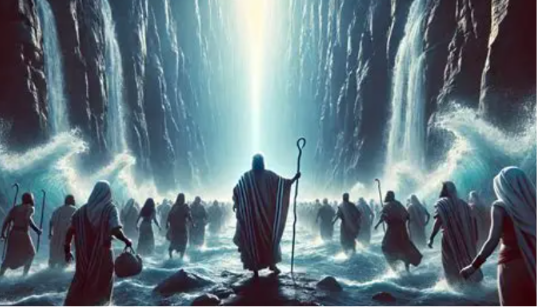
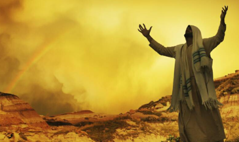
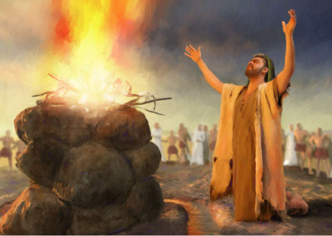
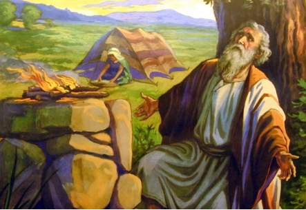

Moises
Aqui veremos como moises, clama a jehova porque no soporta al pueblo el siente mucha carga para el solo, y desea que le quiten la vida.

Leer clamor de MoisesJeremias
Valles brumosos, castillos históricos, el sonido de las gaitas y lagos misteriosos.

leer cansancio de jeremiasElias
El reino de los dragones, colinas esmeralda y una herencia poética celta inquebrantable.

leer desesperacion de eliasJob
Costas geológicas asombrosas, mitos de gigantes y una vibrante cultura folclórica.

leer perdidas de job